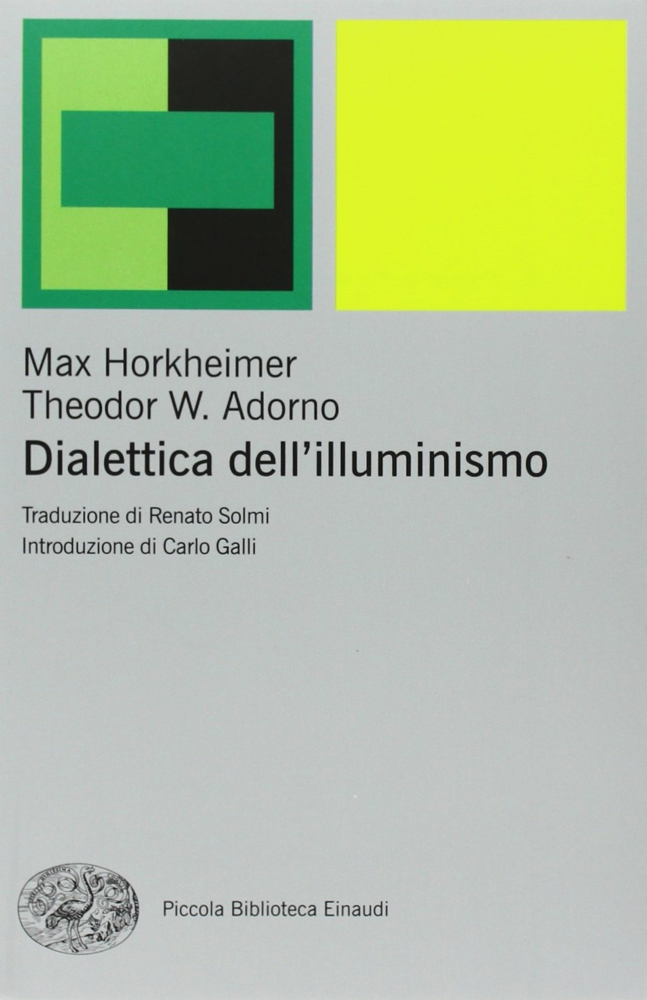
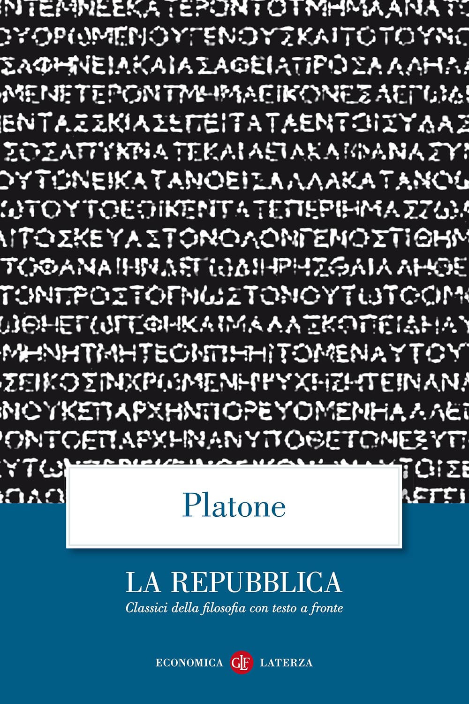
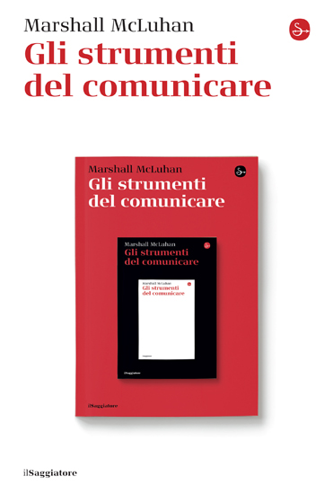
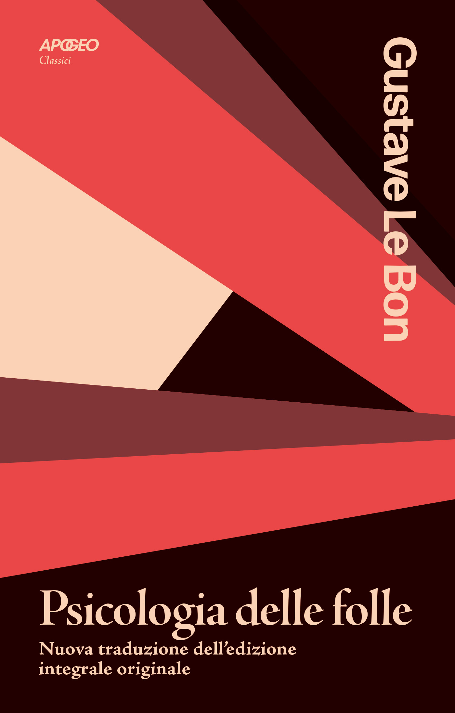
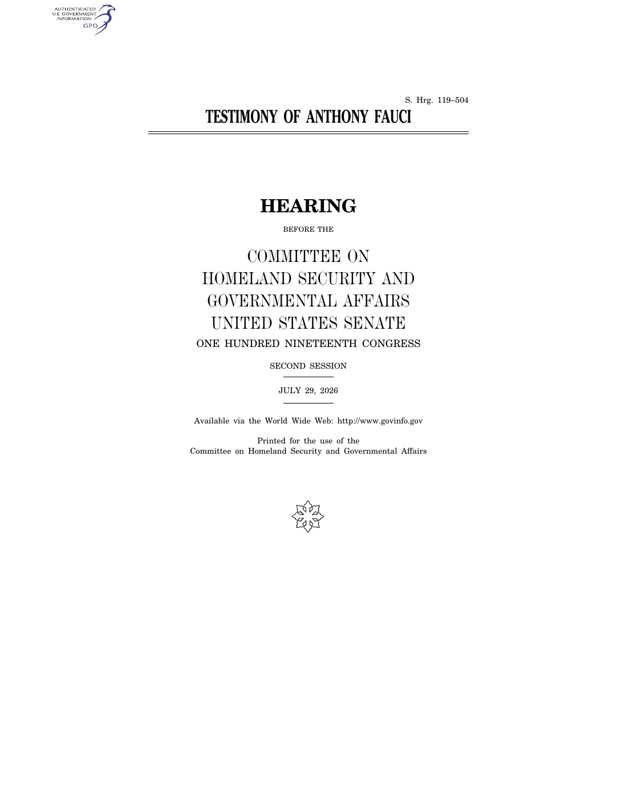
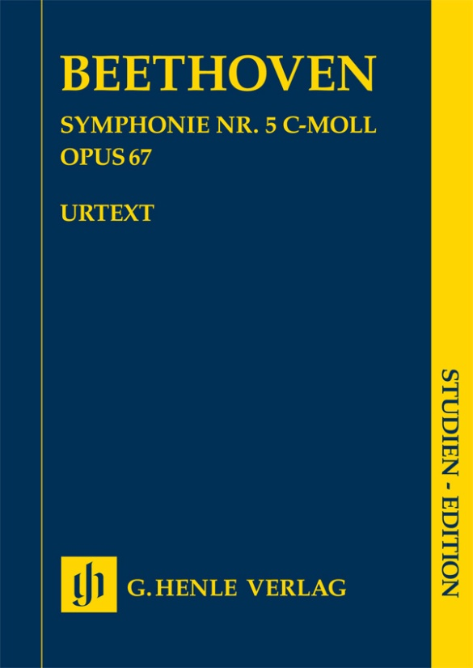

24:53 · 6 OPERE
Fin quando sarà ancora possibile continuare ad ignorare le contraddizioni di quest'epoca?
Il filo del discorso
La conversazione si apre con Dialettica dell’illuminismo e sviluppa una critica delle contraddizioni fra progresso della conoscenza e capacità di giudizio. Il richiamo platonico ai filosofi al governo introduce il rapporto fra sapere e potere; la formula di McLuhan sul medium sposta l’attenzione sulle condizioni della comunicazione. Psicologia delle folle di Gustave Le Bon viene poi richiamata per discutere come il prestigio possa sospendere il giudizio critico.
Leggi la sintesi completaRiduci la sintesi
Nella seconda parte questi temi sono applicati polemicamente alla comunicazione politica e scientifica contemporanea. Il relatore menziona un’audizione di Anthony Fauci, documenti personali e il ricorso al Quinto emendamento: sono argomenti della sua critica, da distinguere da una verifica delle accuse. Il resoconto del Senato del 29 luglio 2026 è collegato come identificazione probabile, sulla base dei dettagli evocati. Il finale insiste sulla resistenza della realtà agli schemi attraverso cui la si interpreta. Dialettica dell’illuminismo e Psicologia delle folle sono titoli espliciti nella fonte automatica. I collegamenti alla Repubblica, a Understanding Media e alla Quinta sinfonia di Beethoven ricostruiscono invece allusioni riconoscibili: nel filmato non viene precisata un’edizione. I nomi di Ortega y Gasset e Wilhelm Marr, il richiamo a un film e altri autori non bastano a identificare ulteriori testi. L’aforisma attribuito a Jean Cocteau nella descrizione del video resta senza una fonte libraria accertata.
I libri nel discorso

Dialettica dell’illuminismo
Note sul riferimento
Copertina: Einaudi, Piccola Biblioteca Einaudi, 2010
Edizione illustrativa dell'opera, con traduzione di Renato Solmi e introduzione di Carlo Galli; non identificata nel video.
Il titolo Dialettica dell’illuminismo è pronunciato all’inizio; il seguito ne parafrasa l’apertura. I nomi degli autori sono deformati dal riconoscimento vocale. Nessuna edizione è identificata.

La Repubblica
Identificazione probabile
Note sul riferimento
Copertina: Laterza · La Repubblica · edizione con testo a fronte di riferimento
Immagine associata all’ISBN di riferimento e controllata visivamente; edizione e traduzione non identificate come quelle citate o lette nel video.
Allusione ai filosofi che governano o ai governanti che filosofano: confronto con Repubblica V, 473c–e. Il titolo dell’opera non è pronunciato, identificazione probabile.

Gli strumenti del comunicare (Understanding Media)
Identificazione probabile
Note sul riferimento
Copertina: Il Saggiatore, 2023, traduzione di Ettore Capriolo; opera originale del 1964.
Immagine autentica dell’opera, controllata visivamente; l’edizione di riferimento non è attribuita al filmato.
McLuhan e la formula The medium is the message sono richiamati; il titolo completo del libro non è letto. Collegamento probabile a Understanding Media, il cui primo capitolo riprende la formula; non è attribuito al diverso The Medium Is the Massage.

Psicologia delle folle
Note sul riferimento
Copertina: Apogeo · 2025 · nuova traduzione dell’edizione integrale originale
Immagine autentica dell’opera, controllata visivamente; l’edizione di riferimento non è attribuita al filmato.
Sono nominati Gustave Le Bon e Psicologia delle folle, con il tema del prestigio che paralizza la facoltà critica. Il passo corrisponde al libro II, capitolo III, sezione sul prestigio; edizione non identificata.

Testimony of Anthony Fauci — S. Hrg. 119-504 (29 July 2026)
Identificazione probabile
Note sul riferimento
Frontespizio: Frontespizio del resoconto ufficiale S. Hrg. 119-504, 119th Congress, second session, U.S. Government Publishing Office, 2026.
Pagina originale del documento identificato. L’identificazione nel video è probabile; nessuna edizione materialmente mostrata è confermata.
Il riferimento all’audizione di Fauci, alle 111 invocazioni del Quinto emendamento e a documenti personali è coerente con l’audizione del 29 luglio 2026. Data e titolo non sono pronunciati: identificazione probabile, distinta dalle audizioni del 2024.

Sinfonia n. 5 in do minore, op. 67
Identificazione probabile
Note sul riferimento
Copertina della partitura: Partitura di studio Henle Urtext, HN9813, a cura di Jens Dufner, ISMN 9790201898131.
Copertina autentica della partitura Henle Urtext della Sinfonia n. 5 op. 67, edizione per studio a cura di Jens Dufner. Non è una copertina discografica e non corrisponde a una registrazione identificata nel video.
Si evoca una Quinta sinfonia e l’immagine della realtà che bussa alla porta, senza nominare il compositore. Associazione probabile alla Quinta di Beethoven; è un riferimento musicale, non un testo o una specifica registrazione.
Fonti e approfondimenti (7)
- MIT Press · Understanding Media: The Extensions of Man ↗
- Gustave Le Bon · The Crowd, testo dell’opera, libro II, capitolo III, sezione sul prestigio ↗
- GovInfo / U.S. Government Publishing Office · Testimony of Anthony Fauci, S. Hrg. 119-504 ↗
- Resoconto ufficiale dell’audizione del 29 luglio 2026 · testo e indice degli allegati ↗
- Senato USA · pagina dell’audizione del 29 luglio 2026 ↗
- Rand Paul · comunicato del 29 agosto 2026 che menziona le 111 invocazioni, fonte per il confronto ↗
- Henle · Beethoven, Sinfonia n. 5 in do minore op. 67 ↗